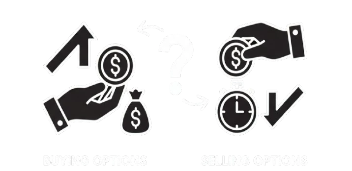

स्टॉक मार्केट मध्ये यशस्वी होण्याचे स्वप्न पाहत असाल तर तुमच्या प्रवासाला दिशाहीन बनविणाऱ्या अफवांपासून सावध राहणे गरजेचे आहे. ऑप्शन ट्रेडिंगच्या जगामध्ये अफवांचे फार मोठे जाळे निर्माण झालेले आहे, जे तुमच्या गुंतवणुकीचे फार मोठे नुकसान करण्यासाठी कारणीभूत ठरते.
ऑप्शन ट्रेडिंग मध्ये जर टिकून राहायचे असेल तर त्यासाठी तुमच्याकडे योग्य माहिती आणि अचूक निर्णयक्षमता असावी लागेल. शेअर मार्केट मध्ये अनेक प्रकारच्या निराधार अफवा वेगाने पसरत असतात. काही अशाच अफवांचा आम्ही पर्दाफाश करण्याचा प्रयत्न केलेला आहे. अर्थात तुमच्या यशाच्या मार्गात अडथळा ठरणाऱ्या ऑप्शन ट्रेडिंग मधील अफवा ज्यावर विश्वास ठेवणे तुम्हाला थांबवावेच लागेल.
अफवा: ऑप्शन ट्रेडिंग हे एक जुगार आहे.

Key Takeaways:
- ऑप्शन ट्रेडिंग हे नक्कीच जुगार नाही, तर ते एक गणितीय आणि धोरणात्मक आर्थिक साधन आहे, ज्यामध्ये यश मिळविण्यासाठी नियमित शिक्षण, शिस्त आणि कठोर नियमांचे पालन अनिवार्य आहे.
- ऑप्शन ट्रेडिंग हे तात्काळ पैसे कमविण्यासाठी जुगार मनोवृत्तीने केले, तर त्याचे परिणाम देखील जुगारासारखेच विनाशकारी असू शकतात.
- ऑप्शन खरेदी करणाऱ्याचा सर्वाधिक तोटा हा केवळ प्रीमियमपुरता मर्यादित असतो, जो जुगारातील संपूर्ण बेट गमावण्यापेक्षा वेगळे आहे.
भारतीय शेअर बाजारामध्ये अनेक वर्षांपासून सातत्याने ऐकायला मिळणारी अफवा म्हणजे "ऑप्शन ट्रेडिंग हे एक जुगार आहे." ही होय. या अफवेमागे कारणे भरपूर आहेत, परंतु काही तात्काळ कारणे सांगायची झाल्यास खालीलप्रमाणे सांगता येतील.
| ◆ | प्रमुख कारण: शेअर बाजारामध्ये 90% गुंतवणूकदारांना तोटा होतो. |
| ◆ | मानसिक कारण: ऑप्शन ट्रेडिंग हा झटपट श्रीमंत होण्याचा मार्ग आहे. |
| ◆ | अंधश्रद्धाळू कारण: ऑप्शन ट्रेडिंग हा फक्त नशिबाचा खेळ आहे. |
शेअर बाजारामध्ये जोखीम नक्कीच असते, परंतु या ठिकाणी सखोल ज्ञान आणि गणितीय रणनीती तुम्हाला फायदेशीर बनविण्यासाठी कारणीभूत ठरते. आम्ही ऑप्शन ट्रेडिंगच्या संकल्पना या जुगारापेक्षा वेगळ्या कशा आहेत याचे मुद्देसूद विश्लेषण या लेखामध्ये दिलेले आहे. जे तुमच्या मनातील भ्रम दूर करण्यासाठी अतिशय महत्वाचे ठरतील.
जुगार आणि ट्रेडिंगमधील सामान्य फरक.
ट्रेडिंग आणि जुगार या दोघांमध्ये देखील नफ्या तोट्याचे गणित असतेच असते. परंतु या दोघांच्या धोरणामध्ये आणि भूमिकेमध्ये फार मोठा फरक आहे, जो समजून घेणे प्रत्येक ट्रेडर्स साठी आवश्यकच आहे. खालीलप्रमाणे दिलेल्या तुलनात्मक सारणीमध्ये हे फरक अधिक स्पष्टपणे दिसतात.
| मापदंड | जुगार | ट्रेडिंग / गुंतवणूक |
|---|---|---|
| मूलभूत आधार | दैवी योगायोग, नशीब आणि भावनिक अंदाज | तथ्ये, आकडेवारी, आणि गणितीय संभाव्यता |
| विश्लेषणाचे घटक | विश्लेषण शून्य असते आणि परिणाम देखील पूर्णपणे अनियमित असतात. | बाजारपेठेचे सखोल तांत्रिक आणि मूलभूत विश्लेषणाचा आधार. |
| जोखीम व्यवस्थापन | कोणतेही जोखीम व्यवस्थापन अस्तित्वात नसते. | स्टॉप-लॉस, डायव्हर्सिफिकेशन सारख्या पद्धतींनी जोखीम व्यवस्थापित करता येते. |
| कायदेशीर स्थिती | बेकायदेशीर, प्रतिबंधित किंवा काटेकोर नियमनाखाली. | सेबी (SEBI) नियंत्रित असणारा नियमित व कायदेशीर उपक्रम. |
| उद्देश | मनोरंजन आणि झटपट श्रीमंत होण्याचा आशावादी उद्देश. | भांडवलामध्ये वाढ करणे आणि व्यावसायिक दृष्टिकोनातून नियमित परतावा मिळवणे. |
ट्रेडिंग मधील गणितीय संभाव्यतेचा आधार
सामान्य व्यक्तीची मानसिकता जरी ट्रेडिंगला जुगार समजत असेल तरीही, ट्रेडिंगचा पाया हा शुद्ध गणितीय संभाव्यता आणि आकडेवारी यांच्यावर आधारित आहे. बाजारपेठेतील किमतींचा चढ उतार केवळ भ्रम नसून तो विशिष्ट पॅटर्न आणि ट्रेंड नुसार काम करतो. जुगार हे ऐच्छिकतेवर आधारित असते, तर व्यावसायिक ट्रेडिंग हे गणितीय संभाव्यतेची शिस्तबद्ध प्रक्रिया असते.
एक सोपे उदाहरण:
समजा तुमच्या ट्रेडिंगची रणनीती अशी आहे की, तुमच्या ट्रेड मधील नफा 100 रुपये आणि जोखीम 50 रुपये आहे, अशा एकूण ट्रेड पैकी 60% वेळा नफा होतो. म्हणजेच ज्या ज्या वेळी तुमचा नफा होतो, तो तोट्याच्या दुप्पट प्रमाणात असतो.
म्हणजेच 100 ट्रेड्स जरी केले, आणि त्यामध्ये 40 वेळा जरी नुकसान झाले, तरीही उर्वरित नफ्यातील ट्रेडमुळे एकूण निकाल हा अंतिमतः नफ्यामध्ये राहतो.
यालाच गणितीय संभाव्यता असे देखील म्हणता येईल. आणि याच गणितामुळे ट्रेडिंग हे जुगारापेक्षा वेगळे ठरते. येथे निर्णय हे भावनांवर नाही तर तर्क, नियोजन आणि आकड्यांवर घेतले जातात.
अफवा: ऑप्शन ट्रेडिंगमध्ये सातत्याने जास्त परतावा मिळतो.

Key Takeaways:
- ऑप्शन ट्रेडिंग मध्ये उच्च लिव्हरेजमुळे तात्काळ मोठा नफा दिसू शकतो, पण त्याच प्रमाणात कमी वेळेत मोठे भांडवल गमावण्याचा धोका असतो.
- ऑप्शन ट्रेडिंग मध्ये संपत्ती गमविण्याचा दर इतर ट्रेडिंग प्रणालींपेक्षा लक्षणीय प्रमाणात जास्त आहे.
- जोखीम व्यवस्थापन रणनीतीचा वापर न करता भावनिक आधारावर केलेले ट्रेडिंग हे सर्वाधिक धोकादायक ठरू शकते.
भारतीय शेअर बाजारामध्ये ऑप्शन ट्रेडिंग बाबत अनेक प्रकारच्या अफवांचा सोशल मीडियावर बाजार मांडला जातो. कमी वेळात दुप्पट लाभ, रोज निश्चित नफा आणि झिरो ते हिरो बना, अशा अनेक अफवांनी गुंतवणूकदारांना स्वप्नांच्या जाळ्यात अडकवून ठेवलेले आहे.
परंतु, सोशल मीडियावरील ही आश्वासने किती खरी असतात याची पडताळणी कोणच करत नाही. आणि असे असले तरी 90% गुंतवणूकदारांचे नुकसान होतच असते. यामध्ये वास्तविकता ही आहे की, ऑप्शन ट्रेडिंगमध्ये जरी मोठ्या नफ्याची शक्यता असली, तरीही त्यापाठीमागे शिस्तबद्ध ट्रेडिंग, गणितीय रणनीती आणि जोखीम व्यवस्थापन या बाबी आवश्यकच असतात.
अगदी, अफवेला बळी पडलेल्या एखाद्या ट्रेडरला मोठी कमाई होईलही, परंतु हीच अफवा त्या ट्रेडरची संपत्ती एका झटक्यात संपुष्टात देखील आणू शकते. ऑप्शन ट्रेडिंग हे संधीचा स्रोत असू शकते, परंतु सातत्याने नफा देणारी यंत्रणा नक्कीच नाही. ही बाब व्यवस्थित समजून घेण्यासाठी खालीलप्रमाणे तीन पॉईंट प्रत्येकाने लक्षात घेणे आवश्यक आहे.
परतावा आणि जोखीम यांच्यातील परस्परसंबंध
ऑप्शन ट्रेडिंग मध्ये परतावा आणि जोखीम यांचा थेट आणि जवळचा परस्पर संबंध आहे. हे गुंतवणुकीच्या मूलभूत तत्वांवर आधारित आहे. अर्थात जास्त परताव्याची जास्त जोखीम, आणि कमी परताव्याची कमी जोखीम.
ऑप्शन बायर्स हा प्रीमियम द्वारे कॉन्ट्रॅक्ट खरेदी करून मर्यादित तोटा स्वीकारतो, तर ऑप्शन सेलर्स हा अमर्यादित जोखीमीला सामोरे जातो. अर्थात ऑप्शन ट्रेडिंग ही एक अशी रणनीती आहे, जेथे बाजाराची अपेक्षा आणि तुमची भूमिका यावर तुमच्या परतावा आणि जोखीमीचा आलेख रेखाटला जातो.
अनियंत्रित तोट्याचा धोका
ऑप्शन ट्रेडिंग मध्ये फक्त उच्च परताव्याची संधीच नाही, तर अनियंत्रित तोट्याची शक्यता देखील असते. यामुळे ऑप्शन ट्रेडिंग मध्ये स्टॉप लॉस ऑर्डर्स किंवा हेजिंग तंत्र यासारख्या जोखीम व्यवस्थापन रणनीतीचा उपयोग केला जातो.
ऑप्शन ट्रेडिंग मध्ये प्रत्येक ट्रेडरने ट्रेड सुरु करण्यापूर्वी जोखीमीची स्पष्ट मर्यादा आणि त्याचा संभाव्य परिणाम यांचे प्लॅनिंग केलेच पाहिजे. जोखीम व्यवस्थापन रणनीतीचा वापर न करता नेकेड ट्रेडिंग हे सर्वाधिक धोकादायक ठरू शकते.
यश मिळवण्याची शक्यता फारच कमी
ऑप्शन ट्रेडिंगमध्ये सातत्याने जास्त परतावा मिळतो, ही फार घातक स्वरूपाची अफवा आहे, जे तुमचे भांडवल संपवू शकते. ऑप्शन ट्रेडिंग मध्ये 90% पेक्षा जास्त ट्रेडर्स नियमितपणे संपत्ती गमावतात, आणि हा दर इतर ट्रेडिंग प्रणालींपेक्षा लक्षणीय प्रमाणात जास्त आहे. याचे मुख्य कारण म्हणजे, बाजाराच्या दिशेचा अंदाज लावण्यातील क्लिष्टता हे आहे.
बाजारातील अफवांमुळे आकर्षित झालेला ट्रेडर हा जोखमीच्या व्यवस्थापनाचा विचार न करता ऑप्शन खरेदी करत असतो. अशा स्थितीत बाजारामध्ये फार वेळ टिकून राहणे कठीण असते. या परिस्थितीत ट्रेडरला यश मिळविण्याची शक्यता फार कमी असते.
अफवा: ऑप्शन खरेदी करणे नेहमीच ऑप्शन विक्री करण्यापेक्षा फायदेशीर असते

Key Takeaways:
- ऑप्शन खरेदी मध्ये मर्यादित तोटा आणि अमर्यादित नफा होण्याची क्षमता असते, ज्यामुळे ते कमी भांडवल असलेल्या ट्रेडर्सना आकर्षक वाटते.
- ऑप्शन खरेदी नेहमीच फायदेशीर नसते, कारण कमी होणारा वेळ खरेदीदाराच्या विरोधात काम करतो.
- फायदेशीर असणे ही व्यक्तीच्या जोखीम घेण्याच्या क्षमतेवर आणि ट्रेडिंगच्या शैलीवर अवलंबून असते, त्यामुळे एकच पद्धत सर्व ट्रेडर्ससाठी सर्वोत्तम नसते.
ऑप्शन खरेदी करणे नेहमीच ऑप्शन विक्री करण्यापेक्षा फायदेशीर असते, हा समज पूर्णपणे चुकीचा आहे. ऑप्शनची खरेदी करणे आणि विक्री करणे या दोन्ही बाजूंचे स्वतःचे फायदे आणि तोटे आहेत. अर्थात कोणतीही पद्धती दुसऱ्यापेक्षा श्रेष्ठ नसते, हा नियम येथे लागू होतो.
ऑप्शन ट्रेडिंग हे गुंतवणूकदाराच्या स्पष्ट रणनीती, जोखीम व्यवस्थापन आणि बाजाराच्या दृष्टीकोनावर देखील अवलंबून असते. येथे अनेक घटक एकाच वेळी काम करत असतात. ऑप्शन खरेदी आणि विक्री यांच्यातील तुलनात्मक फरक खालील टेबल द्वारे स्पष्ट करण्यात आले आहेत, जे या अफवेची हवा नक्कीच कमी करतील.
| वैशिष्ट्य | ऑप्शन खरेदी | ऑप्शन विक्री |
|---|---|---|
| नफ्याचे प्रमाण | अमर्यादित स्वरूपाचा नफा, बाजारातील मोठी हालचाल संपूर्ण फायदा देते. | मर्यादित स्वरूपाचा नफा, फक्त मिळालेल्या प्रीमियमपर्यंत नफा मर्यादित. |
| तोट्याचे प्रमाण | मर्यादित स्वरूपाचा तोटा, फक्त भरलेल्या प्रीमियमएवढाच तोटा. | अमर्यादित स्वरूपाचा तोटा, किंमत विपरीत दिशेने खूप वाढल्यास प्रचंड धोका. |
| नफ्याचा स्रोत | मुख्यतः बाजारातील चढ आणि उतारावर अवलंबून. | वेळेचा परिणाम (टाइम डिके) आणि बाजारातील स्थिर व योग्य दिशेतील बदल. |
| अनुभवाची आवश्यकता | नविन ट्रेडर्स साठी सोपे आणि सोयीस्कर. | अनुभवी व शिस्तबद्ध ट्रेडरसाठी योग्य |
| गुंतवणुकीचे भांडवल | फक्त प्रीमियम भरावा लागतो, कमी मार्जिन लागते. | जास्त मार्जिनची आवश्यकता. |
अफवा: जास्त प्रीमियम असलेले किंवा इन-द-मनी ऑप्शन्स सुरक्षित आणि नेहमी फायदेशीर ठरतात.
Key Takeaways:
- ITM ऑप्शन्समुळे टाईम डीके चा धोका कमी होतो, परंतु बाजारातील किमतीचा कल बदलल्यास मोठे नुकसान होऊ शकते.
- प्रीमियम जास्त असण्याचे कारण जास्त अस्थिरता असू शकते, जी प्रीमियम फुगवते आणि नंतर अस्थिरता कमी होताच प्रीमियम वेगाने घसरतो.
- कोणत्याही ऑप्शन ट्रेडिंगमध्ये प्रीमियमची किंमत नव्हे, तर ट्रेडरची अचूक रणनीती नफा निश्चित करते.
शेअर बाजारामधील अनेक अफवांपैकी आणखी एक अफवा, इन-द-मनी (ITM) चे ऑप्शन्स खरेदी करणे सुरक्षित असते. इन-द-मनी ऑप्शन मध्ये इंट्रिनसिक व्हॅल्यू असल्याचे कारण जरी या अफवेमागे असले, तरीही हा समज पूर्णपणे सत्य नाही.
अशा इन-द-मनी ऑप्शन खरेदीमधील असलेला धोका दुर्लक्षित तर होत नाही, याची प्रत्येक ट्रेडरने आपल्या स्तरावर पडताळणी करणे आवश्यक असते. जरी इन-द-मनी ऑप्शन शून्य होण्याची शक्यता कमी असली तरी, विरुद्ध दिशेने बाजार गेल्यास, केलेल्या गुंतवणुकीवर मोठा तोटा होतो. यासाठी खालील बुलेट पॉईंट्स हे प्रत्येक ट्रेडरला समजलेच पाहिजे.
| ◆ | सुरक्षिततेची कोणतीही हमी नाही: इन-द-मनी (ITM) साठी तुम्ही भरलेला जास्त प्रीमियम हा तुमचा जास्तीत जास्त तोटा असतो, आणि बाजारातील लहानशी विपरीत हालचाल देखील तुमच्या मोठ्या गुंतवणुकीवर मोठा नकारात्मक परिणाम करते. येथे टाइम व्हॅल्यू, व्होलेटिलिटी व इतर व्यत्यय यामुळे नफा मिळण्याची कोणतीही हमी नसते. |
| ◆ | प्रीमियम संपविणारे वेळेचे घातक शस्त्र: ऑप्शन ट्रेडिंग मध्ये वेळेनुसार प्रीमियमचे मूल्य कमी होत जाते. आयटीएम ऑप्शन्सच्या उच्च प्रीमियममध्ये वेळेचे मूल्य लक्षणीय प्रमाणात असते, जे कालमर्यादा जवळ येताना झपाट्याने संपुष्टात येते. |
| ◆ | ऑप्शनच्या दुहेरी भूमिका इंट्रिन्सिक व एक्स्ट्रिन्सिक मूल्य: इन-द-मनी (ITM) ऑप्शन्स महाग असतात, कारण त्यांच्या प्रीमियममध्ये इंट्रिन्सिक मूल्य असते, परंतु खरा धोका म्हणजे बाह्य मूल्य अर्थात एक्स्ट्रिन्सिक व्हॅल्यू, जे ऑप्शनच्या कालमर्यादेपर्यंत शून्य होते. |
| ◆ |
ब्रेक-इव्हन पॉइंट ची सीमारेषा: इन-द-मनी ऑप्शन्स खरेदी करताना, गुंतवणूकदारांना एका उच्च ब्रेक-इव्हन पॉइंटचा सामना करावा लागतो, ज्यामुळे नफा मिळवणे अवघड होते. उदाहरणार्थ: Break Even Point = Strike Price + Premium या सूत्राप्रमाणे 1000 रुपयाच्या स्ट्राइकचा ITM कॉल ऑप्शन जर 100 रुपयाच्या प्रीमियम मध्ये घेतला तर, येथे ब्रेक इव्हन पॉईंट हा 1000 + 100 असा 1100 असा उच्च असेल. अर्थात स्टॉकची किंमत 1100 पेक्षा जास्त वाढल्यासच गुंतवणूकदाराचा नफा होणे सुरु होईल. |
| ◆ | डेल्टा या ऑप्शन ग्रीकचा धोका: इन-द-मनी ऑप्शन्समध्ये उच्च डेल्टा हा आकर्षणाचा केंद्रबिंदू असतो. या उच्च डेल्टामुळे प्रत्येक रुपयाच्या चढउतारासाठी जास्त प्रीमियम द्यावा लागतो, परंतु नफा मिळवण्यासाठी आवश्यक असलेल्या बाजारातील मोठ्या हालचालीसाठी हेच भांडवल अडकून राहू शकते. |
| ◆ | Option Sellers यांना फायदेशीर व्यवहार: ऑप्शन विक्रेते ITM ऑप्शन्ससाठी जास्त प्रीमियम आकारतात, ज्यामुळे खरेदीदारांचा ब्रेक-इव्हन पॉइंट लक्षणीय वाढतो. बहुतेक वेळा, बाजारातील अपेक्षित चढउतारापेक्षा कमी बदल झाल्यास, विक्रेत्याला संपूर्ण प्रीमियम नफ्यात मिळतो. |
अफवा: शेअर बाजारातील ऑपरेटर्सचे अनुकरण केल्याने नफा होतो.

Key Takeaways:
- ऑपरेटर्सचा उद्देश विशिष्ट स्टॉकमध्ये कृत्रिम अस्थिरता निर्माण करणे असू शकतो, ज्यामुळे किरकोळ गुंतवणूकदारांचे नुकसान होते.
- सामान्य गुंतवणूकदारांसाठी केवळ FII आणि DII च्या उलाढालीचे अनुकरण करणे यशस्वी होण्याची हमी नाही, कारण त्यांचे उद्देश आणि मार्ग वेगवेगळे असतात.
- ऑपरेटर्स बाजारामध्ये हालचाली निर्माण करतात, परंतु त्यांचे एंट्री आणि एक्झिट पॉईंट्स हे सामान्य गुंतवणूकदार ओळखू शकत नाही.
शेअर बाजारामध्ये ऑपरेटर्सच्या रणनीतीची कॉपी करण्याची प्रवृत्ती अनेक गुंतवणूकदारांमध्ये आढळते. अशा ट्रेडर्स मध्ये भ्रमित करणारी संकल्पना विकसित झालेली दिसून येते, जसे की शेअर बाजारातील ऑपरेटर्सचे अनुकरण केल्याने नफा होतो. परंतु यातील वास्तविकता अशी आहे की, ही ऑपरेटर्सची अप्रत्याशित रणनीती आहे, जेथे मिळणाऱ्या संधी पेक्षा जोखीमीचे प्रमाण जास्त असते.
शेअर बाजारामध्ये अनेकवेळा ऑपरेटर्स पंप आणि डंप यासारख्या गैरप्रकारांचा वापर करून विशिष्ट स्टॉकची किंमत कृत्रिमरित्या वाढवतात. ज्यामुळे किरकोळ गुंतवणूकदार आकर्षित होतील. यावेळी ऑपरेटर्स आपल्या गुंतवणुकीची विक्री करून मोठा नफा कमवितात आणि अशा परिस्थितीत स्टॉकच्या किमतीमध्ये मोठी घसरण पाहायला मिळते.
प्रत्येक ट्रेडरने अशा अफवा किंवा ऑपरेटरच्या संबंधित कथित टिप्स वर अवलंबून न राहता शिस्तबद्ध गुंतवणुकीचा दृष्टीकोन ठेवणे आवश्यक आहे. यासाठी खालीलप्रमाणे काही पॉइंट्सवर प्रत्येकाने अधिक लक्ष देण्यासाठी आम्ही शिफारस करत आहोत.
- FII, DII आणि प्रो ट्रेडर्स यांच्या ट्रेडिंगचे वेगवेगळे उद्देश: शेअर बाजारामध्ये ऑपरेटर्सचे अनुकरण करून नफा मिळविण्याचा मार्ग हा घातक समजला जातो. वास्तविक FII, DII आणि Pro Traders या ऑपरेटर्सच्या ट्रेडिंगचे उद्देश सुस्थापित आणि वेगवेगळे असतात. याबाबतची माहिती खालील पॉईंट्स वरून आपल्याला मिळू शकते.
◆ परदेशी संस्थात्मक गुंतवणूकदार (FII): जागतिक स्तरावरील आर्थिक परिस्थिती, व्याजदर आणि चलन दरांतील बदलांवर आधारित अल्पकालीन किंवा माध्यम कालावधीसाठी हे ऑपरेटर्स गुंतवणूक करत असतात. जागतिक धोरणांमध्ये होणाऱ्या बदलास अनुसरून हे ट्रेडर्स जलद गतीने पोझिशन्स बदलू शकतात. ◆ देशातील संस्थात्मक गुंतवणूकदार (DII): हे ट्रेडर्स दीर्घकालीन संपत्ती निर्माण करण्याच्या उद्देशाने सातत्याने गुंतवणूक करत असतात. ज्यामध्ये मुख्यतः विमा कंपन्या आणि म्युच्युअल फंड्स यांचा समावेश होतो. यांचे ट्रेडिंग अनेकवेळा गुंतवणूकदारांच्या खरेदी आणि विक्रीच्या चक्राशी संबंधित असते. ◆ प्रो ट्रेडर्स (Pro Traders): या गटातील ट्रेडर्स हे अल्पकालीन किंवा अति अल्पकालीन गुंतवणुक करतात. बाजारातील हालचालींवर लक्ष ठेवून तात्काळ नफा कमविण्याचा यांचा उद्देश असतो. जसे आर्बिट्राज, हेजिंग यासारख्या रणनीतीचा हे ट्रेडर्स उपयोग करतात.
वरीलप्रमाणे ऑपरेटर्सचा प्रत्येक गट हा स्वतःच्या रणनीतीप्रमाणे कार्य करतो. यासाठी कोणीही आंधळेपणाने अनुकरण न करता, मार्केटच्या हालचालींचा अभ्यास करून, त्यावर स्वतःचे संशोधन करून स्वतःचे स्पष्ट ध्येय ठरविणे महत्वाचे असते. - जोखीम नियंत्रणासाठी हेजिंग क्रियेचा वापर: आर्थिक क्षेत्रातील कला म्हणजेच हेजिंग होय, जिचा उद्देश स्पष्टपणे संभाव्य तोटा टाळणे हा आहे. FII आणि DII हे संस्थात्मक गुंतवणूकदार हेजिंगचा वापर जोखीम व्यवस्थापनासाठी करतात. यामध्ये मूळ गुंतवणुकीच्या विरुद्ध दिशेने गुंतवणूक करून सुरक्षा कवच निर्माण केले जाते.
बाजारामध्ये FII, DII आणि प्रो ट्रेडर्स हे मोठे खेळाडू त्यांच्याकडे असणाऱ्या प्रचंड भांडवलाच्या जोरावर बाजारामध्ये तात्पुरत्या स्वरूपाची तेजी किंवा मंदी आणू शकतात, ज्यामुळे गुंतवणूकदार अशा जाळ्यामध्ये अडकून तोट्यात येतात.
केवळ FII आणि DII यांचे अनुसरून केल्याने फायदा होईलच असे नाही, कारण यामागे अशा मोठ्या गुंतवणूकदारांचे जोखीम व्यवस्थापनाचे रहस्य दडलेले असते. - लहान गुंतवणूकदारांना आकर्षित करण्यासाठी बाजारपेठेची दिशाभूल: ज्यावेळी किरकोळ गुंतवणूकदार एखादा स्टॉक मोठ्या संख्येने खरेदी करतात, त्यावेळी बाजारातील ऑपरेटर्स त्यांची पोझिशन मोठ्या नफ्यामध्ये विक्री करतात. या प्रकाराला पंप आणि डंप असे देखील म्हटले जाते. या प्रकारात लहान गुंतवणूकदारांचा मोठ्या प्रमाणामध्ये तोटा होतो.
FII किंवा DII द्वारे मोठ्या प्रमाणात खरेदी किंवा विक्री होत असल्याने त्याच दिशेने ट्रेड करण्यास पाठबळ देणाऱ्या बातम्या लहान गुंतवणूकदारांना आकर्षित करण्यासाठीच असतात. ऑपरेटर्स द्वारे केलेले ट्रेडिंग हे केवळ शेअरच्या भावावर अवलंबून नसते, तर ते पोर्टफोलिओचे हेजिंग करण्यासाठी देखील असू शकते.
भारतीय शेअर बाजारातील लहान गुंतवणूकदार हे अनेकदा तात्काळ निर्णय घेताना दिसतात, याचा अर्थ ते ओव्हरकॉन्फिडन्स या मानसशास्त्रीय चक्रात अडकले असण्याची शक्यता असते. - मार्केट मधील मोठ्या प्लेअर्सचे अखंड अनुसरण अशक्य: बाजारातील FII आणि DII यांसारख्या मोठ्या गुंतवणूकदारांच्या क्रियाकालापाची तात्काळ अचूक माहिती मिळविणे अशक्य आहे. ज्यामुळे त्यांचे अनुकरण करण्याची रणनीती अकार्यक्षम ठरते.
संस्थात्मक गुंतवणूकदारांनी केलेल्या हालचालींची माहिती बाजारामध्ये एक दिवस विलंबाने सार्वजनिक केली जाते. अर्थात या माहितीच्या आधारावर गुंतवणुकीचा निर्णय घेणे धोकादायक ठरू शकते. कारण मोठ्या प्लेअर्सची माहिती सामान्यतः सार्वजनिक होण्यापूर्वीच त्यांचे व्यवहार पूर्ण झालेले देखील असतात.
बाजारातील मोठ्या प्लेअर्सचे अखंड अनुकरण हा आकर्षक परंतु दिशाभूल करणारा समज आहे. सबब, बाजारातील अनेक घटकांचे विश्लेषण करताना मोठ्या खेळाडूंच्या वर्तनाकडे केवळ एक संकेत म्हणून पाहिल्यास योग्य ठरेल. यामध्ये FII आणि DII यांचे अखंड अनुसरून न करता, स्वतःचे मूलभूत संशोधन करणे गरजेचे आहे.
अफवा: ऑप्शन ट्रेडिंग हा गुंतवणुकीचा भाग नाही

Key Takeaways:
- ऑप्शन ट्रेडिंगमुळे कमी भांडवलात मोठ्या गुंतवणुकीवर नियंत्रण मिळवता येते, ज्यामुळे गुंतवणुकीचा परतावा वाढवण्याची शक्यता निर्माण होते.
- कव्हर्ड कॉल सारख्या रणनीती या शेअर्सच्या मालकीवर अतिरिक्त उत्पन्न मिळवण्यासाठी गुंतवणुकीचाच एक भाग म्हणून वापरल्या जाऊ शकतात.
- ऑप्शन ट्रेडिंग हे गुंतवणुकीचा भाग असू शकते, परंतु हे स्वतःच एक गुंतवणूक आहे असे म्हणता येणार नाही.
ऑप्शन ट्रेडिंग हा गुंतवणुकीचा भाग नाही, ही अफवा नक्कीच पूर्णपणे सत्य नाही. याचे कारण म्हणजे ऑप्शन ट्रेडिंग हे अतिरिक्त उत्पन्न मिळविण्यासाठी तसेच पोर्टफोलिओची जोखीम कमी करण्यासाठी वापरले जाते. हा एक गुंतागुंतीचा परंतु गुंतवणुकीचा प्रकार आहे, ज्यामध्ये हेजिंग चा वापर प्रभावीपणे केला जातो.
ऑप्शन ट्रेडिंग हा गुंतवणुकीचा एक वैध भाग आहे, जो सामान्य गुंतवणुकीपेक्षा वेगळा, जोखीम असणारा आणि कौशल्ययुक्त देखील आहे. ऑप्शन ट्रेडिंग हा एक प्रकारे गुंतवणुकीचा भाग कसा आहे, हे खालील पॉईंट्स वरून समजून घेता येईल.
| ◆ | हेजिंगसाठी ऑप्शन्सचा वापर गुंतवणुकीत होतो, अर्थात हा प्रकार आपल्या गुंतवणुकीचा एक प्रकारे विमा समजला जातो. |
| ◆ | ऑप्शन ट्रेडिंग द्वारे जोखीम व्यवस्थापन हे पूर्वनिर्धारित रकमेपेक्षा जास्त नुकसान होऊ न देण्याची संधी देतात. |
| ◆ | कव्हर्ड कॉल रणनीतीचा वापर करून, दीर्घकाळ ठेवलेल्या शेअर्सवर नियमित अतिरिक्त उत्पन्न मिळवता येते. |
| ◆ | दीर्घकालीन ऑप्शन कॉन्ट्रॅक्ट्स मधील गुंतवणूकदारांना भविष्यातील वाढीच्या संधींमध्ये सहभागी होण्याची संधी देतात, ते देखील मर्यादित भांडवलासह. |
अफवा: ऑप्शन ग्रीक्स समजावून घेणे आवश्यक नाही फक्त तांत्रिक विश्लेषण पुरेसे आहे

Key Takeaways:
- तांत्रिक विश्लेषण हे भूतकाळातील डेटावर आधारित असते, तर ऑप्शन ग्रीक्स तुम्हाला वर्तमान आणि भविष्यात ऑप्शन किंमतींवर होणाऱ्या परिणामांची स्पष्ट रूपरेषा देतात.
- बाजारातील अदृश्य जोखीम ओळखण्यासाठी आणि त्यावर नियंत्रण मिळविण्यासाठी ऑप्शन ग्रीक्स समजून घेणे प्रत्येक ट्रेडर्स साठी आवश्यक आहे.
ऑप्शन ग्रीक्स समजावून घेणे आवश्यक नाही फक्त तांत्रिक विश्लेषण पुरेसे आहे, ही शेअर बाजारातील पसरलेली अत्यंत घातक स्वरूपाची अफवा आहे. शेअर बाजारामधील हालचाली नक्की काय होतात यावर तांत्रिक विश्लेषण फोकस करते. तर शेअर बाजारामधील हालचाली नक्की का होत आहेत आणि भविष्यातील जोखीम कशी बदलत आहे यावर ऑप्शन ग्रीक्स फोकस करतात.
जरी टेक्निकल चार्ट्स हे बाजाराची दिशा ओळखण्यास मदत करत असले तरीही, ऑप्शनच्या किमतीवर परिणाम करणाऱ्या घटकांबाबत ते पुरेशी माहिती उपलब्ध करून देत नाहीत. याउलट ऑप्शन ग्रीक्स हे केवळ बाजाराची दिशा न दर्शविता बाजारातील अस्थिरता ओळखते आणि वेळेनुसार होणाऱ्या परिणामांची देखील माहिती देते.
आम्ही खालीलप्रमाणे काही निवडक पॉईंट्स द्वारे तांत्रिक विश्लेषण आणि ऑप्शन ग्रीक्स या दोन्ही घटकांबाबत संशोधित माहिती दिलेली आहे, जी सर्व ट्रेडर्सना नक्कीच मार्गदर्शक ठरेल.
तांत्रिक विश्लेषणाच्या मर्यादेची चौकट
बाजारामध्ये काय घडलेले आहे आणि बाजार कोठे जात आहे हे तांत्रिक विश्लेषण स्पष्ट करते, परंतु ऑप्शनच्या किमतीवर परिणाम करणारे महत्वाचे घटक जसे की, गती आणि वेळ या महत्वाच्या घटकांवर तांत्रिक विश्लेषणाची मर्यादा येते.
ऑप्शन प्राईसिंगमध्ये ग्रीक्सचा थेट प्रभाव
ऑप्शनचे प्रीमियम केवळ किमतीच्या आलेखाने ठरत नाहीत, तर यावर एका जटिल गणितीय मॉडेलचा थेट परिणाम असतो. अर्थात हे मॉडेल ऑप्शन ग्रीक्स या साधनांचा वापर करते.
जसे की, डेल्टा, थीटा, वेगा हे ग्रीक्स ऑप्शनच्या किमतीमधील संवेदनशीलतेचे प्रत्यक्ष मापन करतात. तर डेल्टा ऑप्शनच्या किमतीत किती बदल होईल हे सांगतात.
तांत्रिक विश्लेषण केवळ भूतकाळातील माहिती देते, तर ऑप्शन ग्रीक्स हे चालू स्थितीत आणि भविष्यात होणाऱ्या परिणामांचा अंदाज देतात. म्हणूनच ऑप्शन ट्रेडिंग मध्ये तांत्रिक विश्लेषण आणि ऑप्शन ग्रीक्स या दोन्ही घटकांना समांतर महत्व देणे आवश्यक ठरते.
ऑप्शन ग्रीक्सशिवाय रिस्क मॅनेजमेंट अपूर्ण
ऑप्शन्स हे वेळेनुसार कमी होणारे असेट्स आहेत, यामुळे केवळ किमतीचा चढ आणि उतार पाहून केलेले ट्रेडिंग हे धोकादायक ठरू शकते. ट्रेडिंग मधील अदृश्य जोखीम ओळखण्यासाठी प्रत्येक ट्रेडरला ग्रीक्स सोबत जाणे अनिवार्य देखील आहे. खरा ट्रेडर फक्त नफा कमवत नाही तर त्याच्या गुंतवणुकीची रक्षा देखील करतो, आणि हे ऑप्शन ग्रीक्सच्या ज्ञानाशिवाय शक्य नाही.
अफवा: ब्रोकर्स हे इनसाइड माहितीचा गैरवापर करतात.
Key Takeaways:
- ब्रोकर्सला त्यांच्या क्लायंटची माहिती गोपनीय ठेवावी लागते, हे त्यांच्यासाठी कायदेशीररित्या बंधनकारक आहे.
- बाजारातील ब्रोकर्सला चायनीज वॉल च्या नियमांचे एक महत्त्वाचे बंधन आहे, जे गुंतवणूक बँकिंग आणि ब्रोकिंग विभागांना वेगळे ठेवते.
- बाजारामधील अत्याधुनिक तंत्रज्ञानामुळे आता सर्वच व्यवहार अधिक पारदर्शक झाले आहेत, सबब कोणतेही संशयास्पद व्यवहारावर लगेच लगेच लक्षात येऊ शकतात.
ब्रोकर्स हे इनसाईड माहितीचा गैरवापर करतात, अशी अफवा नेहमीच आपल्याला ऐकायला मिळते. यातील गैरवापर म्हणजे काय, तर स्वतःच्या फर्मचा किंवा काही खास व्यक्तींचा फायदा करण्यासाठी डेटाचा अनधिकृतपणे केलेला वापर. परंतु आजच्या युगात हे कितपत खरे आहे, हे पाहणे देखील आवश्यक आहे.
भारतीय शेअर बाजारामध्ये इनसायडर ट्रेडिंग हा विषय नेहमीच चर्चेत राहिलेला आहे. परंतु असे कृत्य हे सेबी च्या नियमांनुसार गंभीर स्वरूपाचा गुन्हा देखील आहे. अशा अनधिकृत घटकांवर सेबी द्वारे कडक निर्बंध देखील लावण्यात आलेले आहेत. परंतु आजच्या युगात ब्रोकर्स कंपन्यांना असे अनधिकृत क्रियाकलाप करणे शक्य आहे का?, या प्रश्नाचे उत्तर आपल्याला खालील निवडक पॉईंट्स वरून मिळू शकते.
SEBI (सेबी) चे कठोर नियमन
भारतीय शेअर बाजारामध्ये इनसाइडर ट्रेडिंगला प्रतिबंध घालण्यासाठी आणि गुंतवणूकदारांच्या हिताचे रक्षण करण्यासाठी सेबी द्वारे जागतिक स्तरावर मान्यता असलेले कठोर नियम राबविलेले आहेत. हे नियमन केवळ कंपनीचे अधिकारी व कर्मचारी यांनाच लागू होतात असे नाही, तर त्याच्या जवळच्या संबंधित व्यक्तींना देखील लागू होतात.
अशा प्रकारच्या कठोर नियमांमुळे इनसायडर माहितीचा गैरवापर करणाऱ्यांवर कायदेशीर कारवाई करण्याचा अधिकार सेबी या नियामक संस्थेकडे आहे. ज्यामध्ये गुन्हेगारास मोठा दंड किंवा तुरुंगवासाची शिक्षा देखील होऊ शकते.
चायनीज वॉल प्रणालीचा वापर
इनसायडर ट्रेडिंगला प्रतिबंध घालण्यासाठी वित्तीय संस्थांमध्ये विशेषतः मोठ्या ब्रोकरेज हाऊसेस आणि इन्व्हेस्टमेंट बँकांमध्ये चायनीज वॉल नावाची प्रणाली वापरली जाते. ही एक भौतिक प्रणाली आहे जी ब्रोकिंग फर्म्स आणि वित्तीय संस्थांमध्ये हितसंबंधाचा संघर्ष टाळण्यासाठी वापरली जाते.
या प्रणालीच्या वापरामुळे एका विभागातील गोपनीय माहितीचे आदानप्रदान दुसऱ्या विभागासोबत रोखण्यासाठी एक व्हर्च्युअल अडथळा निर्माण केला जातो.
स्वयंचलित व अतिजलद प्रणाली
आजच्या युगातील अत्याधुनिक तंत्रज्ञानामुळे शेअर बाजारामध्ये अधिक पारदर्शकता निर्माण झाली आहे. स्वयंचलित आणि हाय फ्रिक्वेन्सी ट्रेडिंग सिस्टीमवर आजचे बाजार चालतात. हे तंत्रज्ञान गुंतवणूकदारांसाठी नक्कीच सोयीस्कर आहेच, परंतु यामुळे इनसाइडर ट्रेडिंगसारख्या गैरप्रकारांवर देखरेख करणे अधिक प्रभावी झाले आहे.
अफवा: एकदा सेटअप सापडला की कायमस्वरूपी नफा होणारच होणार.

Key Takeaways:
- बाजारामध्ये नेहमी बदल होत असतात, म्हणून एक सेटअप तुम्हाला प्रत्येक वेळी नफा देईलच असे कधीही होत नाही.
- ट्रेडिंग सेटअप कितीही विश्वासार्ह असला तरीही भावनिक नियंत्रण महत्त्वाचेच असते, अन्यथा ट्रेडिंग मध्ये जोखीम निर्माण होऊ शकते.
एकदा सेटअप सापडला की कायमस्वरूपी नफा होणारच होणार, ही एक अशी अफवा आहे जी गुंतवणूकदारांना खूप आकर्षित करत आहे. कारण या अफवेमधे एक शॉर्टकट आहे, जो निरंतर अभ्यास, जोखीम व्यवस्थापन आणि ट्रेडिंग मधील शिस्त या महत्वपूर्ण पैलूंना दुर्लक्षित करतो.
परंतु प्रत्यक्षात शेअर बाजाराची वास्तविकता यापेक्षा देखील खूपच वेगळी आहे. केवळ एका सेटअप वर अवलंबून ट्रेडिंग करणे हे खूप घातक ठरू शकते. बाजारातील सातत्याने बदलणाऱ्या परिस्थितीसोबत जुळवून घेण्याची क्षमता अशा एकाच सेटअप मध्ये निश्चितच नसते.
आकर्षक वाटणारी ही अफवा का निर्माण झाली असावी, यशस्वी ट्रेडर साठी सेटअपच्या पलीकडे कोणते घटक महत्वपूर्ण ठरतात, आणि अशा अफवांपासून आपल्याला लांब कसे राहता येईल, हे या लेखामध्ये आपण तपशीलवार समजून घेणार आहोत.
बाजाराची सातत्याने बदलणारी परिस्थिती
शेअर बाजार हा सातत्याने बदलणारा प्रवाह आहे असे म्हणता येईल. यामध्ये आर्थिक धोरणे, महागाई, राजकारण यांच्यासारखे घटक प्रभाव टाकत असतात. परिणामी बाजारातील मागणी आणि पुरवठा यांचे समीकरण सतत बदलत राहते.
यशस्वी ट्रेडर हा केवळ एकाच सेटअपवर अवलंबून न राहता तो शिस्त, आणि जोखीम व्यवस्थापनासोबतच बाजाराच्या बदलत्या स्थितीप्रमाणे आपल्या सेटअप मध्ये देखील बदल करण्याची क्षमता ठेवतो. शेअर बाजारामध्ये एखादी रणनीती आज फायदेशीर ठरू शकेलही, परंतु उद्या तीच रणनीती फायदा देणारी ठरेल याची खात्री नसते.
ट्रेडिंग मधील शिस्त आणि मनोविज्ञान
ट्रेडिंग मध्ये सातत्यपूर्ण नफा हे केवळ चांगल्या सेटअपवर अवलंबून नसते, तर ते शिस्तबद्ध ट्रेडिंग आणि मानसिक नियंत्रण करण्याची क्षमता यावर आधारित असते. ट्रेडिंग मध्ये सेटअप किंवा रणनीती फक्त 20 ते 25% यश देऊ शकते, तर सर्वात महत्वाची मानसिकता 75 ते 80% फायदेशीर ठरते. कारण जरी तुमचा सेटअप मजबूत असला तरीही मोह आणि भीतीची मानसिकता तुमचा निर्णय क्षणात बदलू शकते.
शेअर बाजारात यशस्वी होण्यासाठी जोखीम व्यवस्थापनासोबत शिस्तबद्ध पद्धतीने रणनीतीचा वापर करणे अनिवार्य आहे. कोणताही भावनिक निर्णय पूर्णपणे टाळणे यासाठी आवश्यकच ठरते.
महत्त्वाचे निष्कर्ष
ऑप्शन ट्रेडिंगच्या जादुई जगामध्ये जुगार आणि जास्त परतावा यासारख्या कल्पना जरी आकर्षक वाटत असल्या तरी त्या धोकादायक अफवा आहेत. ऑप्शन ट्रेडिंग हे व्यावसायिक साधन आहे, जे जोखीम नियंत्रणाद्वारे वापरणे सोयीस्कर होते. यासाठी एका सेटअपचा वापर करून कायमस्वरूपी नफा मिळविण्याची कल्पना करणे योग्य होणार नाही.
बाजारातील सातत्याने बदलणाऱ्या परिस्थिती प्रमाणे योग्य निर्णय घेण्याचे कौशल्य प्रत्येकाने आत्मसात केले पाहिजे. भीती आणि लोभ या मानसिकतेतून बाहेर पडून, ऑप्शन ग्रीक्स सोबतच तांत्रिक विश्लेषणासारख्या महत्वाच्या घटकांवर अधिक लक्ष देणे महत्वाचे ठरते. तसेच ऑप्शन ट्रेडिंग हे फक्त ट्रेडिंगपुरते मर्यादित न ठेवता त्याचा गुंतवणुकीचा भाग बनवला पाहिजे. यासाठी हेजिंग आणि पोर्टफोलिओ व्यवस्थापन यांचा शिस्तबद्ध पद्धतीने वापर देखील केलाच पाहिजे.
पुढचं पाऊल: अफवांपासून दूर आणि शिस्तीच्या गुंतवणुकीकडे
शिस्तबद्ध ट्रेडिंगची सुरुवात आज आणि आत्तापासूनच करा, आणि घेतलेल्या प्रत्येक निर्णयाचे बारकाईने अवलोकन करा.
आम्ही तुम्हाला प्रगत स्वरूपाच्या जोखीम व्यवस्थापनासोबतच ट्रेडिंग मधील मानसशास्त्रावर मार्गदर्शन करू शकतो. कृपया तुम्हाला कोणत्या घटकावर अधिक जाणून घ्यायला आवडेल?